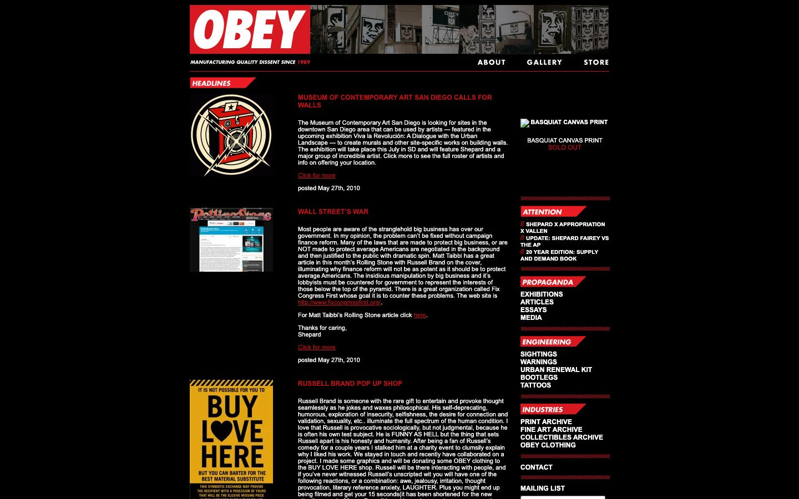

References / Website / 285
Obey Giant website, 2010
The 2010 version of Shepard Fairey’s site, on black, labels every section with a slanted red tab in italic capitals.
- Source
- obeygiant.com (archived copy)
- Creator
- Obey Giant (Shepard Fairey)
- Made
- 2010 (capture date)
- Style
- Constructivism (agent-proposed, not yet reviewed by a person)
- Moods
- Agitational, militant, graphic
- Evidence
- Captured from the Internet Archive copy of 27 May 2010 with
tools/capture.mjs(headless Chrome, 1440 × 900) on 28 September 2026 and inspected. The page is a fixed-width layout centered on black; the tabs and rules are images. - Reviewed
- Rights
- Third-party work, stored with credit for commentary. License: unverified. Rights policy
Context
Wikipedia states that Fairey “began appropriating the Russian Constructivist style utilized in Soviet-era propaganda during his time in San Diego”. Wikipedia.
Observed
- The logo is a red rectangle with “OBEY” in heavy white italic capitals, followed by a strip of black-and-white photographs of street posters.
- Section labels such as “HEADLINES”, “ATTENTION”, “PROPAGANDA”, “ENGINEERING”, and “INDUSTRIES” sit on red tabs whose right edge is cut on a diagonal, in white italic capitals.
- Red diagonal hatching forms the rules between the sections of the right column.
- Navigation and link lists are set in white bold capitals. Article titles are red capitals.
- Body text is small white Arial on black. Thumbnails of Fairey’s posters add cream, yellow, and red.
Why it belongs
The site shows the propaganda vocabulary of the style (red labels, capitals, words like “propaganda” and “engineering” as section names) applied to a 2010 blog layout. The red is drawn in images, so the computed measurement finds only 2% chromatic area and 11% uppercase text; the fingerprint cannot see the tabs.
The diagonal survives only in small details: the cut edge of each tab and the hatched rules.
Borrow
Cut the end of each red label on a diagonal to give a static list a sense of direction.
Use a band of diagonal red hatching as a section divider.
Measured
Machine-extracted by tools/extract-traits.js on . Full measurement.
- Type families
- Arial (100%), georgia (0%)
- Type scale ratio
- 1.09
- Median radius
- 0 px
- Mean chroma
- 0.01
- Palette
- #000000 82%
- #ffffff 17%
- #c41114 2%

